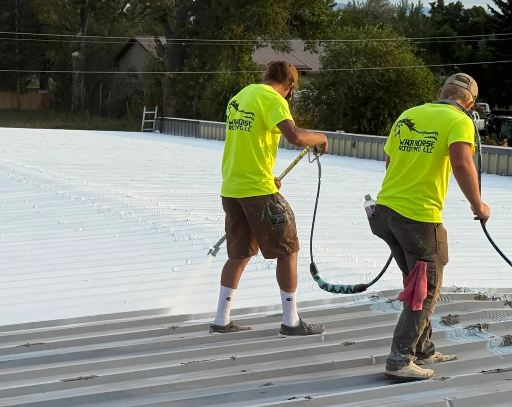

Commercial roofing services
Metal and flat roof restoration
A metal roof can leak at the screws even when the panels are sound. On a flat roof, trouble often starts where the surface meets a wall or a rooftop unit. What we find at those connections helps determine which repairs and coating system your building needs.

Metal roof restoration
Panel laps and fasteners give water a way through a metal roof. Wade checks those connections, rust, and older patches to see whether the panels can stay in place.
What goes under the coating
- Clean the panels, treat corrosion, and apply a rust-inhibiting primer where needed.
- Reinforce the seams and seal the exposed fastener heads.
- Apply the reflective finish across the prepared metal.
Fabric-reinforced flat roofing
On a suitable low-slope roof, the crew embeds polyester fabric in a wet base coat. The fabric spans seams and reinforces the places where the roof turns up a wall or meets the base of equipment.
In Rock Springs, a clinic roof called for four-inch fabric strips at each seam, then fabric across the full roof. A reflective topcoat covered the reinforced surface.
See the Rock Springs clinic roof- Reflective topcoat
- Reinforcing fabric
- Base coat
- Primed existing roof
Riverton, Wyoming
Coating around rooftop equipment
The raised base of an A/C unit creates a corner where a horizontal roof meets a vertical wall. On this roof, the crew carried the coating around the base and up the inside of the parapet walls.
See the Riverton restoration


Can your roof be restored?
Where a leak shows up indoors is a starting point. On the roof, Wade checks how water drains, whether the existing material is secure, and how earlier repairs have held up.
Request a roof assessment- When a repair may be enough
- If the issue is confined to one seam or equipment curb and the surrounding roof is sound, a local repair may address it.
- When restoration makes sense
- A sound roof with a worn finish can be a candidate. The estimate should identify what needs repairing and how the crew will prepare the surface before coating.
- When materials need replacement
- Trapped moisture, loose roofing, or a damaged deck can mean part or all of the roof needs replacement. Those conditions need attention before a coating can go on.
Warranty and scheduling
What does the warranty cover?
Qualifying installations may be eligible for a limited manufacturer’s warranty of up to 20 years, subject to manufacturer approval. Ask Wade which term applies to your proposed system, what the written warranty covers, and what maintenance it requires.
Can the building stay open during the work?
That depends on roof access and what happens below the work area. Tell Wade which entrances, loading bays, or rooftop equipment need to stay in use so you can work through scheduling together.
What should I have ready for the site visit?
Have the building address and a contact who can provide roof access. Photos of interior stains, dates of recent leaks, and records of past repairs help Wade narrow down what to look at.